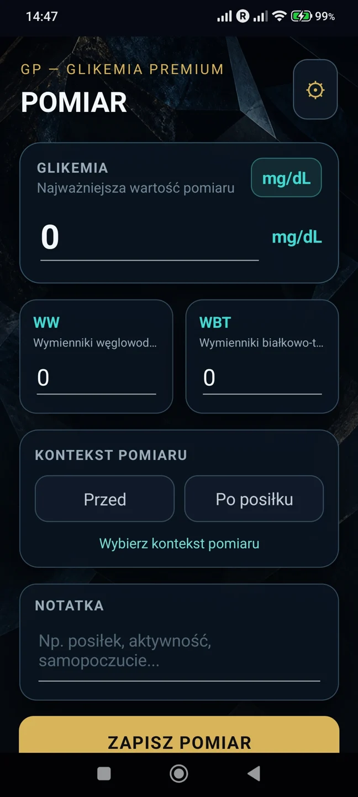
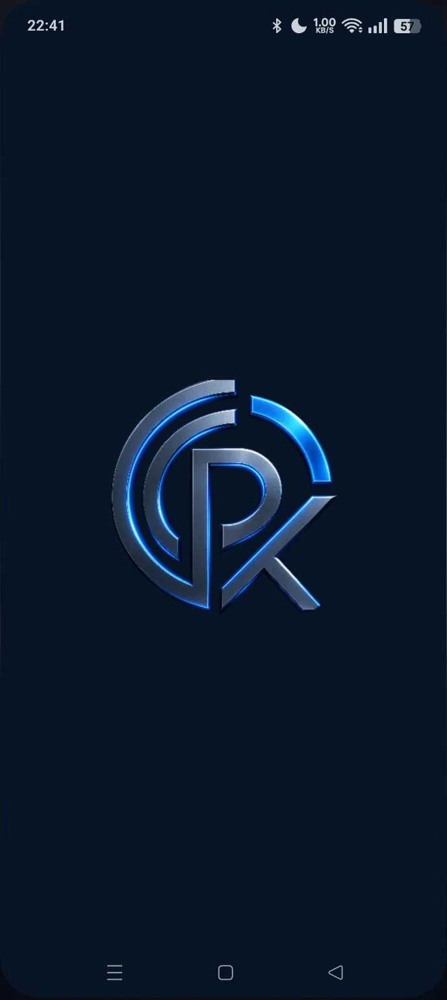
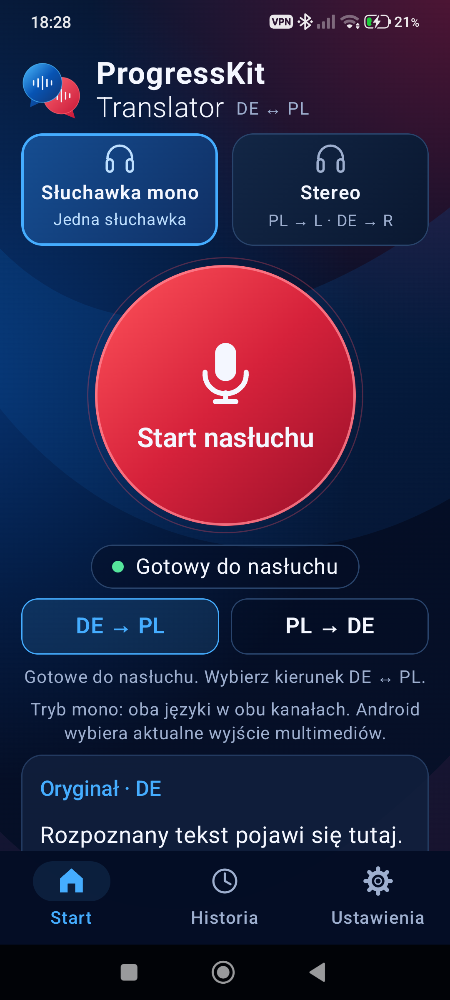
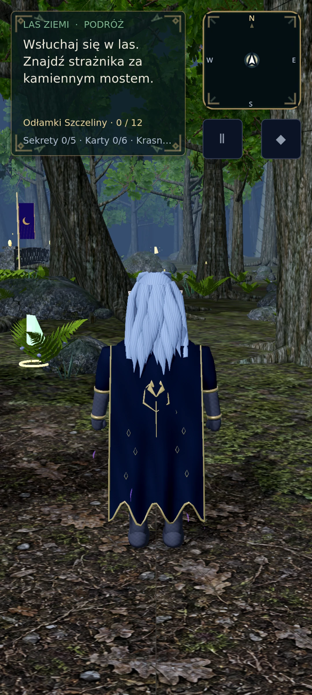
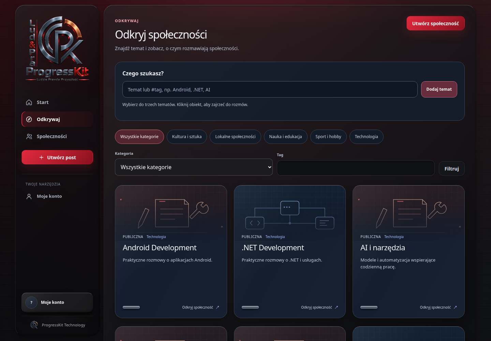

Aplikacje
Glikemia Premium
Dziennik glikemii na Androida dostępny jako APK 1.0, z lokalną historią, wykresem i raportem PDF.
Dostępny APK
Katalog produktów, realizacji i zaplecza technicznego.
Wyszukaj nazwę lub technologię, porównaj etap rozwoju i poznaj zakres potwierdzony w źródłach.
14 projektów i elementów zaplecza
Stan prac ↓Brak projektów dla tych kryteriów. Zmień wyszukiwanie lub wybierz „Wszystkie projekty”.
Dziennik glikemii na Androida dostępny jako APK 1.0, z lokalną historią, wykresem i raportem PDF.
Dostępny APK
Testowy klient poczty na Androida z obsługą IMAP/SMTP, prywatnymi powiadomieniami i bezpieczną tożsamością urządzenia.
Wersja testowa
Prywatna poczta wymaga czytelnego interfejsu oraz kontroli nad urządzeniami, danymi dostępowymi i odłączaniem konta.
Androidowy klient korzysta z lokalnej pamięci podręcznej, szyfrowanego magazynu danych dostępowych i backendu przypisywania urządzeń. Transport IMAP/SMTP i sygnały push są rozdzielone od interfejsu.
Użytkownicy prywatnej, samodzielnie hostowanej poczty · Operatorzy kontrolujący dostęp urządzeń do skrzynek
Wersja testowa Androida z lokalnym podpisanym APK. Udokumentowano IMAP/SMTP i Debug FCM na Xiaomi; publicznego linku pobrania Mail nie potwierdzono.
Kotlin / Android / Jetpack Compose / Room / WorkManager / Android Keystore / Firebase Cloud Messaging / Eclipse Angus Mail / jsoup / C# / .NET 10 / ASP.NET Core / PostgreSQL
Pełne case study →Tłumacz wypowiedzi DE ↔ PL na Androida z rozpoznawaniem mowy, lokalnym przekładem i odczytem głosowym.
Prototyp
Krótka rozmowa w dwóch językach wymaga połączenia rozpoznawania, tłumaczenia i odsłuchu w jeden kontrolowany cykl.
Aplikacja prowadzi kolejne sesje systemowego rozpoznawania mowy, tłumaczy przez ML Kit i odczytuje wynik TTS. Kierunek wybiera użytkownik, a rozpoznawanie czeka na końcowy wynik wypowiedzi.
Osoby prowadzące naprzemienne rozmowy po polsku i niemiecku
Lokalny debug 0.2.2, aktualizowany na fizycznym telefonie. Brak potwierdzonego publicznego wydania sklepowego.
Kotlin / Android / Jetpack Compose / ML Kit Translation / SpeechRecognizer / TextToSpeech / AudioTrack
Pełne case study →Rozwijana gra fantasy łącząca eksplorację 3D, więź ze stworzeniami i taktyczne pojedynki.
W rozwoju
Przygodowy świat, kolekcja stworzeń i walka potrzebują wspólnego postępu oraz oprawy, która mieści się w budżecie telefonu.
Istniejąca wersja integruje Las Ziemi 3D, kampanię, kolekcję, lokalne walki z AI i zapis postępu. Sześć pełnych krain i docelowa oprawa pozostają kierunkiem rozwoju.
Gracze zainteresowani eksploracją fantasy i taktycznymi pojedynkami · Uczestnicy prywatnych testów rozwijanej gry
Publiczna strona preview Android/Windows jest dostępna. Aktualny zakres rozgrywki jest offline; funkcje online i docelowa oprawa pozostają w rozwoju.
C# / Godot 4.6 / .NET / OpenGL Compatibility / JSON / ASP.NET Core / PostgreSQL / SignalR
Pełne case study →Platforma społecznościowa w finalizacji przed publiczną betą, z głównymi funkcjami społeczności, rozmów i przejrzystej moderacji.
Finalizacja
Dyskusje potrzebują czytelnych zasad, uzasadnionych decyzji moderacyjnych i możliwości odwołania, a uczestnicy chcą łatwo odnajdywać interesujące społeczności.
Modułowa platforma łączy konta, publikacje, komentarze, media i społeczności z obsługą zgłoszeń, uzasadnień i odwołań. Odkrywanie tematów korzysta z rzeczywistych treści dostępnych dla danego odbiorcy.
Uczestnicy społeczności tematycznych · Twórcy i administratorzy społeczności · Moderatorzy
Główne funkcje są zaimplementowane i lokalnie przetestowane. Trwa finalizacja przed publiczną betą oraz odbiór bramek publikacji najnowszej wersji.
C# / .NET / ASP.NET Core / Entity Framework Core / PostgreSQL / Next.js / React / TypeScript / Docker
Pełne case study →Rozwijany system dla biur rachunkowo-podatkowych: kartoteka klientów, dokumenty, sprawy i księgowość z portalem Android.
W rozwojuDane osób prywatnych, firm, dokumentów i rozliczeń międzynarodowych są rozproszone, a korekty księgowe muszą zachowywać spójną historię.
Wspólna kartoteka, sprawy i obieg dokumentów łączą się z silnikiem księgowym, raportami oraz natywnym portalem Android. Status testów technicznych jest oddzielony od akceptacji merytorycznej reguł.
Polskie biura rachunkowo-podatkowe · Klienci indywidualni ze sprawami PL/DE/NL · Przedsiębiorcy i reprezentanci spółek
Lokalny checkpoint techniczny. Brak potwierdzonego wydania produkcyjnego, publicznego Android Release i aktywnych integracji KSeF/JPK.
C# / .NET / ASP.NET Core / Entity Framework Core / PostgreSQL / Next.js / React / TypeScript / Kotlin / Jetpack Compose / Android / ClamAV
Pełne case study →Fundament wielofirmowego systemu dla branży opiekuńczej, skupiony na organizacjach, rolach i kontrolowanym dostępie do podopiecznych.
PrototypFirmy opiekuńcze potrzebują uporządkowania relacji między personelem, koordynatorami, podopiecznymi i rodziną przy zachowaniu odrębności danych organizacji.
Backend rozdziela organizacje i role, wiąże konta z personelem oraz udostępnia centralny model nadawania i odwoływania dostępu członkom rodzin.
Firmy opiekuńcze · Koordynatorzy opieki · Opiekunowie i uprawnieni członkowie rodzin
Zweryfikowano lokalny fundament backendu. Brak potwierdzonej publicznej aplikacji, kompletnego interfejsu i odbioru produkcyjnego.
C# / .NET / ASP.NET Core / Entity Framework Core / PostgreSQL / ASP.NET Core Identity / JWT / xUnit
Pełne case study →Prototyp systemu transportowo-logistycznego: panel dyspozytora, API tras i floty oraz demonstracyjny Smart Match.
PrototypRęczne planowanie przewozów i rozproszone dane o trasach, pojazdach i zapotrzebowaniu utrudniają wykorzystanie dostępnych miejsc i ograniczanie pustych przebiegów.
Monorepo zawiera panel WWW, osobny interfejs pasażera, API danych i model PostgreSQL. Smart Match oblicza propozycje dla scenariusza demonstracyjnego.
Przewoźnicy · Dyspozytorzy · Docelowo pasażerowie i nadawcy przesyłek
Prototyp lokalny. Brak potwierdzonej działającej usługi rezerwacji, płatności, przesyłek lub śledzenia GPS na żywo.
TypeScript / Next.js / React / Node.js / Prisma / PostgreSQL / PostGIS / Leaflet / Turborepo / pnpm
Pełne case study →Strona stylistki paznokci: autentyczne prace, opis podejścia i przygotowanie wiadomości w sprawie terminu.
Etap do potwierdzeniaOsoba zainteresowana stylizacją potrzebuje zobaczyć wykonane prace i przekazać pomysł oraz preferowany termin w jednym miejscu.
Statyczna strona z galerią i formularzem, który układa wiadomość, pokazuje jej treść i pomaga skopiować ją do rozmowy.
Klientki stylistki paznokci · Lokalne marki usługowe
Publiczne źródła. Aktualna dostępność witryny wymaga potwierdzenia; bezpośredni adres Messengera pozostaje do uzupełnienia.
HTML / CSS / JavaScript / WebP
Pełne case study →Witryna autora z archiwum tekstów, fragmentami PDF i interaktywną prezentacją literacką.
Etap do potwierdzeniaCzytelnik potrzebuje uporządkowanego miejsca, w którym znajdzie twórczość autora i materiały do pobrania.
Kilka statycznych stron łączy opis autora, archiwum PDF i animowaną prezentację treści.
Czytelnicy · Autorzy i twórcy
Publiczne źródła. Aktualne działanie witryny i usług zewnętrznych wymaga potwierdzenia.
HTML / CSS / JavaScript
Pełne case study →Projekt narzędzia do organizacji pracy kontrolerów biletów, raportów wyjazdów i rozliczeń, udokumentowany w dotychczasowym portfolio.
Etap do potwierdzeniaPraca kontrolerów wymaga uporządkowanego zbierania informacji i przygotowania raportów.
Dotychczasowe materiały prezentują interfejs narzędzia operacyjnego. Kod aplikacji nie był dostępny podczas audytu.
Zespoły kontrolerów biletów · Osoby rozliczające pracę zespołów
Zakres nie został potwierdzony w dostępnych źródłach.
Dostępne materiały portfolio. Aktualny etap, zakres działających funkcji i dostęp do aplikacji wymagają potwierdzenia.
Pełne case study →Centralny katalog produktów i realizacji: od potrzeby do rozwiązania, z aktualnym zakresem i źródłami.
W rozwojuProdukty zmieniają się szybciej niż ręcznie utrzymywane prezentacje. Opisy i statusy wymagają jednego punktu aktualizacji.
Jeden recenzowany katalog generuje eksplorator, case studies i powiązania technologii. Statyczne podstrony działają również bez JavaScript.
Użytkownicy i odbiorcy ekosystemu ProgressKit
Kandydat V5 przygotowywany lokalnie. Publikacja i odbiór w przeglądarce wymagają oddzielnego potwierdzenia.
HTML / CSS / JavaScript / Python / GitHub Actions
Pełne case study →Własna analityka zdarzeń witryny, z osobną bazą produktu do licznika pobrań i moderowanych opinii.
W rozwojuRozwój portfolio wymaga informacji o wykorzystaniu strony bez dokładania zewnętrznego trackera i identyfikatorów urządzeń.
Mały backend FastAPI zapisuje zdefiniowane typy zdarzeń w SQLite. Strona wysyła minimalne zdarzenia tylko na własnej domenie.
Użytkownicy i odbiorcy ekosystemu ProgressKit
Kod backendu i integracja strony dostępne w repozytorium. Pełne działanie produkcyjne, retencja i konfiguracja logów wymagają sprawdzenia.
Python / FastAPI / SQLite / Docker
Pełne case study →Wspólne zaplecze techniczne aplikacji: kontenery, reverse proxy i procedury utrzymania.
W rozwojuAplikacje, API i dystrybucja plików muszą współpracować, zachowując dane i możliwość wycofania zmiany.
Konfiguracje Docker i Caddy opisują podział usług oraz trwałe wolumeny. Wydanie strony zawiera wyłącznie przejrzane pliki publiczne.
Użytkownicy i odbiorcy ekosystemu ProgressKit
Zaplecze ekosystemu, nie osobny produkt komercyjny. Dostępne konfiguracje są fragmentami; pełna konfiguracja serwera wymaga operatora.
Docker / Caddy / Linux / GitHub Actions / Python
Pełne case study →Przegląd katalogu: 2026-10-23. Etap i dostępność opisano osobno.
Daty odnoszą się do sprawdzonych źródeł. Wynik lokalnego testu nie potwierdza aktualnego wdrożenia.
APK Android 1.0 jest udostępniony bezpośrednio przez ProgressKit. Publikacja w Google Play stanowi osobny etap i nie jest potwierdzona.
Wersja testowa Androida z lokalnym podpisanym APK. Udokumentowano IMAP/SMTP i Debug FCM na Xiaomi; publicznego linku pobrania Mail nie potwierdzono.
Główne funkcje są zaimplementowane i lokalnie przetestowane. Trwa finalizacja przed publiczną betą oraz odbiór bramek publikacji najnowszej wersji.
Publiczna strona preview Android/Windows jest dostępna. Aktualny zakres rozgrywki jest offline; funkcje online i docelowa oprawa pozostają w rozwoju.
Kandydat V5 przygotowywany lokalnie. Publikacja i odbiór w przeglądarce wymagają oddzielnego potwierdzenia.
Kod backendu i integracja strony dostępne w repozytorium. Pełne działanie produkcyjne, retencja i konfiguracja logów wymagają sprawdzenia.
Zaplecze ekosystemu, nie osobny produkt komercyjny. Dostępne konfiguracje są fragmentami; pełna konfiguracja serwera wymaga operatora.
Lokalny debug 0.2.2, aktualizowany na fizycznym telefonie. Brak potwierdzonego publicznego wydania sklepowego.
Lokalny checkpoint techniczny. Brak potwierdzonego wydania produkcyjnego, publicznego Android Release i aktywnych integracji KSeF/JPK.
Dostępne materiały portfolio. Aktualny etap, zakres działających funkcji i dostęp do aplikacji wymagają potwierdzenia.
Zweryfikowano lokalny fundament backendu. Brak potwierdzonej publicznej aplikacji, kompletnego interfejsu i odbioru produkcyjnego.
Prototyp lokalny. Brak potwierdzonej działającej usługi rezerwacji, płatności, przesyłek lub śledzenia GPS na żywo.
Publiczne źródła. Aktualna dostępność witryny wymaga potwierdzenia; bezpośredni adres Messengera pozostaje do uzupełnienia.
Publiczne źródła. Aktualne działanie witryny i usług zewnętrznych wymaga potwierdzenia.